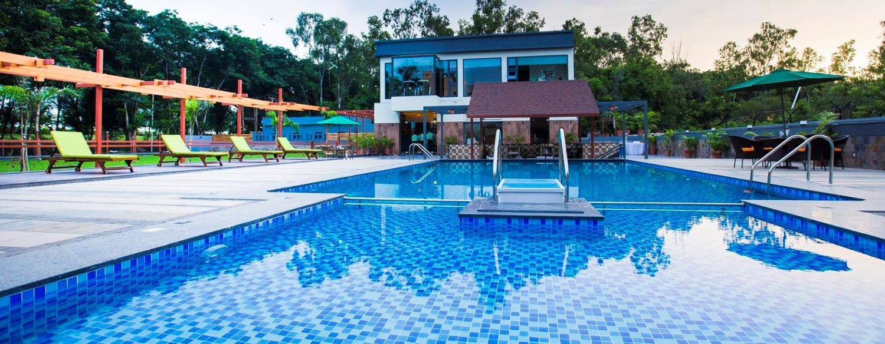
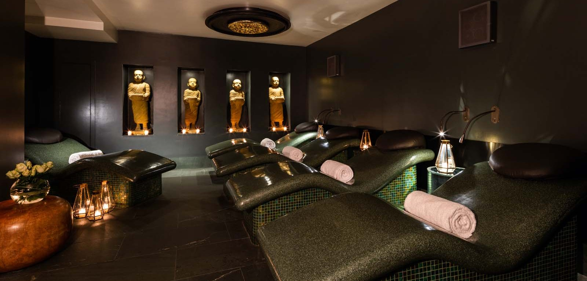

Swimming pool

Size: 18 m, 3 lanes, Depth 1.2 m
The indoor swimming pool is exclusively for guests.
(limit 2 adults and 2 children per room)
Guests under 14 years old may enter only when accompanied by an adult.
No outside food inside the swimming pool.
No large-size inflatable pool floats or pool toys permitted.
(swimming floats for children and life vests permitted)
Shower rooms and personal lockers are available for use.
Swimsuits and swim caps are required to use in the swimming pool.
(Swim cap means only caps used for indoor swimming. Failure to wear a swim cap may limit you from entering the pool.)
SPA

Treatments typically offered in day spas include massages; facials
and makeup application;
electrolysis; spa manicures and pedicures;
body treatments like exfoliation, wraps and packs; aromatherapy;
and hair services like cutting, styling and coloring.
Historically, many spas were developed where natural hot springs or healing mineral waters already existed.
Hotels were built and people came to for the health benefits a good soak or "taking the waters" would provide.
The facilities provided spa services, activities, health-related dining,
all with a focus on the benefits of the natural setting.
Food Service

Hot and cold dishes available at breakfast: fruits, cold meat, cheese, cereal, yogurts
- as well as such expected hot foods as eggs, bacon, tomatoes, mushrooms, sausages (western expectations).
Plenty of bread varieties and fresh pastries. Fruit juices, tea, coffee.
Lunch menu a little disappointing: mostly sandwiches, burgers, salads.
A good time to go and eat in the village of Franschhoek.
Dinner (at Dish Restaurant) is well served and of high class.
Meat, fish and vegetarian dishes. Nothing particularly exciting, but all extremely well cooked,
flavoured and presented. Such ingredients as Cape salmon, calamari, chicken, duck, lamb (which I found vey good),
steaks; pasta, vegetables. Various desserts.
A good wine list (of South African wines) with a wide range of wines by the glass.
Cab And Airport facilities

Our hotel providing the facilities which mostly required things
for the all the customers. expectatialy customers who travelled from different countries.
Cab are available all the time, irrespective of the time and day
it available all the time.